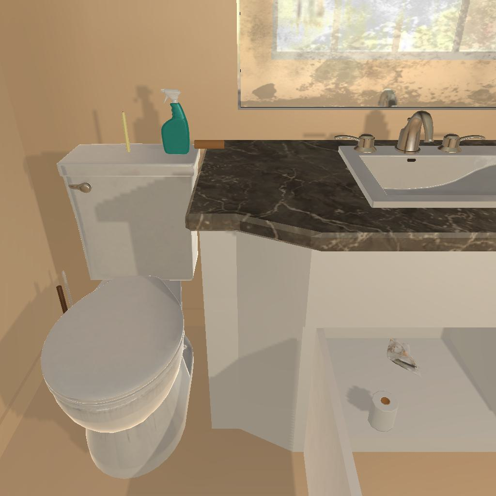

---------------------------------------------------------task: 11---------------------------------------------------------
--------------------------------------------------------------------------------------------------------------------------------------------------------------------
--------------------------------------------------------------------------------------------------------------------------------------------------------------------
Step:--------------------------------------------------------------------------9-------------------------------------------------------------------------------
----------------------------------------
VLM Prompt:
Image1:
Image2:
**Instruction**
1. Analyze the provided images to identify all visible household objects and compare the difference between images (e.h. whether the object is opened or not and taken on hand or not), focusing on those relevant to the task description "clean some soapbar and put it in bathtubbasin."
2. Use the analysis of images and the task hint "The agent must find an object of the desired type, pick it up, go to a sink or a basin, clean the object with a sink or basin, and then find the correct location to place it and put it down there. The agent does not need to use soap bottle or faucet to clean the object, and the agent just needs to do action that is "clean the object with the sink or sink basin"." to answer the question: what is the most reasonable action in the choices for the task description "clean some soapbar and put it in bathtubbasin"?
3. Decide and write the answer using the template: The answer is: (i): , where i is the real number. If there is no desired object in images, search every place based on **Initial Observation** to find the object. And if no one is exactly correct, choose a similar answer.
**Initial Observation**
You are in the middle of a room. Looking quickly around you, you can see bathtub (1), bathtubbasin (1), toilet (1), cabinet (1-2), countertop (1), sink (1), sinkbasin (1), garbagecan (1)
**Answer Choices**
(1): go to bathtub 1
(2): go to toilet 1
(3): go to countertop 1
(4): go to sink 1
(5): go to sinkbasin 1
(6): go to cabinet 2
(7): go to garbagecan 1
(8): take cloth 2 from bathtubbasin 1
(9): take faucet 3 from bathtubbasin 1
(10): take candle 3 from bathtubbasin 1
(11): examine bathtubbasin 1
**Answer**
Let's think step by step by following the instructions.
----------------------------------------
----------------------------------------
Original Response:
Firstly, in Image 1, we can see a toilet, a sink with a sink basin, a countertop, a window, and some objects like a spray bottle and a plunger. There is no visible bathtub or bathtub basin in this image. In Image 2, we can see a bathtub with a bathtub basin, and there seems to be a soap bar inside it.
Comparing the two images, we can see that the soap bar is already in the bathtub basin, which is relevant to the task description of "clean some soapbar and put it in bathtubbasin."
According to the task hint, the agent does not need to use a soap bottle or faucet to clean the object; they just need to perform the action "clean the object with the sink or sink basin." However, since the soap bar is already in the bathtub basin, the agent does not need to clean it again.
Based on the initial observation, we know there is a bathtub basin present in the room. Since the soap bar is already in the bathtub basin and no further cleaning action is required, the most reasonable next step for the agent would be to examine the bathtub basin to verify the soap bar's presence and ensure the task is complete.
Therefore, the answer is: (11): examine bathtubbasin 1.
----------------------------------------
----------------------------------------
>>> Refine Original VLM Response and Get Pure Action: No action
----------------------------------------
-----------------------------------------------------------------
Running time: 12.060800313949585 seconds
Total Money: 4.952840000000003
-----------------------------------------------------------------
-----------------------------------------------------------------
Text Observation:Nothing happens.
-----------------------------------------------------------------
UNSUCCEED